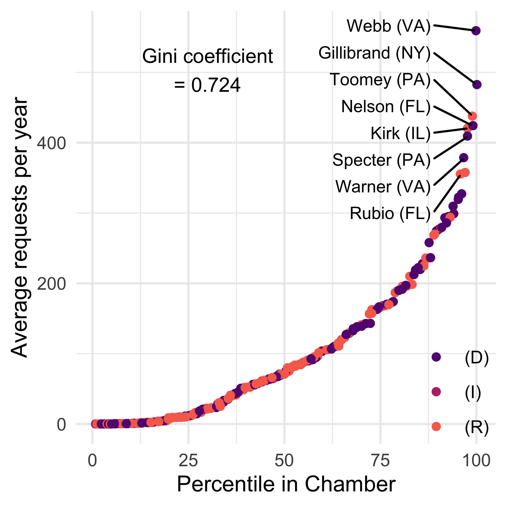
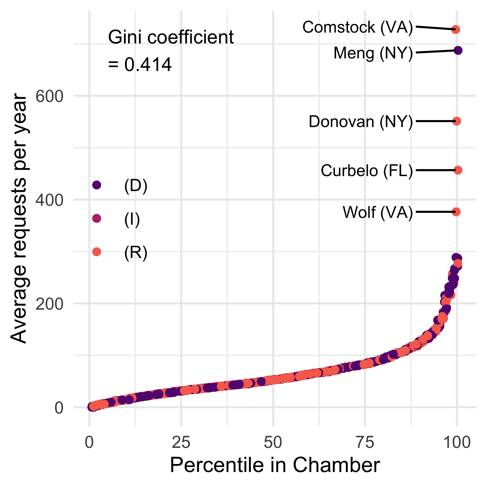

1 Disparities in Interbranch Representation
For years, the United States Congress has been making headlines for appearing unproductive and dysfunctional.1 The two longest government shutdowns in American history, at 35 and 43 days, occurred within less than seven years of one another. The effects of these shutdowns, particularly the longer one in 2025, were immediately apparent to the public in the form of disruptions to air travel and funding for SNAP benefits. Partisan polarization in Congress, which was largely responsible for the 2025 shutdown, has been at an all-time high in both chambers for over a decade. Intra-party discord has also been more visible, with House Republicans’ difficulties electing a Speaker in early 2023, followed by the unprecedented Motion to Vacate that ended Kevin McCarthy’s speakership that October. Unsurprisingly, recent Congresses have been historically unproductive when it comes to passing legislation. This lack of legislative productivity has contributed to Congress’s ceding power to the executive branch. The institution’s approval ratings have cratered to near all-time lows. Although constituents still approve of their individual representatives more than they approve of Congress as an institution, these approval ratings are polarized by party.2
While many members of the public — and certainly the punditry — are aware of Congress’s legislative woes, fewer are aware of other work that members of Congress do behind the scenes to help constituents and shape executive-branch policymaking. Running parallel to the gridlocked lawmaking activities of Congress is the work that legislative offices do to help constituents navigate the federal bureaucracy. Constituency service has been a routine but profoundly important part of how the institution of the U.S. Congress has worked from the beginning. In addition to advocating for individuals, congressional offices help businesses, nonprofits, and local governments with federal contracts, permits, grants, investigations, enforcement actions, and more. Often informed by constituency service work, members of Congress make requests related to policy, seeking to shape how policy is made in executive branch agencies. In this book, we argue that these activities belong under an overarching concept of interbranch representation — substantive representation beyond legislation. It occurs regularly and at high volume. Despite being largely hidden, informatively suspect activities, like special work on behalf of corporate campaign donors, are a small portion of these activities. When we look closely at what congressional offices are doing, the vast majority of legislators’ requests, even those on behalf of business interests, are the kinds of things most people would want their representatives doing, suggesting that the institution of Congress is working to represent constituents and influence policy.
However, the large volume of interbranch representation belies a stark inequality between legislators when it comes to the amounts of interbranch representation that they perform. Some legislators are extraordinarily high performers on this metric, and this group of high performers includes a somewhat surprising mix. Consider, for example, Representative Barbara Comstock (R-VA) and Senator Kirsten Gillibrand (D-NY), who both have high numbers of average annual requests. Gillibrand made an average of nearly 500 requests to agencies per year. Comstock — despite representing a House district much smaller in population than the state of New York — made an average of over 700 requests per year. Both legislators made requests to a variety of agencies, including U.S. Citizenship and Immigration Services to help constituents navigate immigration processes, the Department of Veterans Affairs to help veterans with bureaucratic issues, and agencies like the Centers for Medicare and Medicaid Services for policy-related matters. In addition to representing vastly different constituencies, Comstock and Gillibrand are also very different legislators. Comstock cultivated a reputation for service in her district that was not enough to prevent her from losing re-election in 2018, and Gillibrand became known for opposing the Trump administration during the same time, even running for the Democratic nomination for president in 2020.
Our puzzle is why the offices of some members of Congress, like Rep. Comstock and Sen. Gillibrand, engage with executive branch agencies so much more than others. What explains the massive inequality, and what does it mean for how we should think about the U.S. Congress? Are legislators who are extraordinary at interbranch representation also extraordinary in other parts of their job, like legislative effectiveness or fundraising? What does this work say about how well legislators represent their constituents?
This seemingly simple question of how well members of Congress represent their constituents is one that political scientists return to again and again. We argue that a disproportionate focus on legislative work has limited contemporary understanding of the complete picture of congressional representation. In so doing, scholars have largely overlooked a significant component of the work of congressional offices: direct engagement with federal agencies. We have thus failed to assess our democracy on important grounds.
In this book, we advance and measure the concept of interbranch representation — how Members of Congress work directly with federal agencies on behalf of various constituencies. Interbranch representation includes casework (constituency service) on behalf of individuals, nonprofits, and businesses as well as communications with agencies about executive-branch policymaking and implementation.3 For example, prior work shows how legislators engage in interbranch representation to represent constituents’ needs (Fiorina 1977; Fenno 1978; Mills and Kalaf-Hughes 2015; Powell et al. 2023; Snyder et al. 2025), constituents’ policy preferences (Ritchie 2018, 2023), shared identity groups (Lowande et al. 2019), or corporate donors (Powell et al. 2023).
We gather disparate scholarship into a unified framework of Demand, Capacity, and Strategic Choices to explain variation in interbranch representation, integrating and extending theories rooted in unequal demand, unequal legislator (and legislative office) capacity, and varying strategic motivations to invest time and energy in interbranch representation as opposed to other activities like legislating, communications, or fundraising.
Prior work has typically studied these activities — and their explanations — piecemeal, focusing on one type of activity and a narrower set of causes at a time. To explain variation in interbranch representation, studies have focused on institutional position (Lowande 2018; Lowande and Potter 2019; Lauterbach and Ritchie 2025; Judge-Lord et al. 2026), experience (Ritchie 2018, 2023; Lowande 2018; Judge-Lord et al. 2026), or party status and partisan alignment (Ritchie 2018, 2023; Powell et al. 2023; Lowande 2018, 2019; Lauterbach and Ritchie 2025). Theories also suggest that interbranch representation ought to be driven by ideological alignment and electoral competition (Fiorina 1977; King 1991), but these intuitions are largely unsupported by empirical work (Lowande 2018; Ritchie 2018, 2023). Our aim in this book is to integrate types of behavior and explanations to provide a more comprehensive assessment of the drivers of interbranch representation.
By refocusing attention on the bulk of the actual work done in legislators’ offices4, we revisit core questions of political science: How should we understand the representative functions of Members of Congress? Empirically, what do they do in office? How do we assess the quality of representation? How do the legislative and executive branches interact? Has it changed in recent years?
We answer these questions by leveraging new data on interbranch representation, including over half a million hand-coded requests from Members of Congress to federal agencies from 2007 to 2025. This painstakingly collected new dataset allows us to systematically measure representation in a new way.
1.1 What is Interbranch Representation?
Members of Congress’s direct work with federal agencies is not limited to helping individual constituents. They also help companies, nonprofits, and local governments with federal agencies. In addition to this broadly defined constituency service, they also work directly with federal agencies on policy issues, including drafting legislation, shaping implementation, and conducting oversight.
We conceptualize interbranch representation as varying along two dimensions: the constituency represented (individuals, businesses, or nonprofits and local governments) and the type of representational activity undertaken (constituency service or policy work). This yields five sub-types of interbranch representation: (1) constituency service work on behalf of individual constituents, (2) constituency service work on behalf of businesses, (3) constituency service work on behalf of local governments or nonprofits, (4) working directly with federal agencies on general policy issues, and (5) working directly with federal agencies on policy on behalf of specific industries.
We find that, collectively, members of Congress make over a hundred thousand requests a year directly to executive branch officials. Unconstrained by legislative agendas and party discipline (Ritchie 2023), interbranch representation allows all members of Congress to directly shape the workings of government. However, we find that this work is highly unequal — some members engage in extensive interbranch representation, and others do almost none.
As described in the discussion of Comstock and Gillibrand above, interbranch representation includes advocacy on a wide range of subjects. Helping immigrants in their dealings with USCIS and veterans in their interactions with the VA are two very common forms of interbranch representation involving individual constituency service. Specifically, these actions might involve helping veterans check the status of their claims with the VA or helping immigrants file necessary forms. Other forms of individual constituency service might involve helping constituents obtain a tax refund with the IRS, helping constituents check their disability rating with the Social Security Administration, and helping workers receive compensation for their injuries from the Department of Labor. Much of the work that legislators do on behalf of businesses also involves immigration, as they help businesses obtain visas for their workers. Legislators also respond to queries about citations, fines, and loans, including loans for the Service-Disabled Veteran-Owned Small Business program. Interbranch representation on behalf of nonprofit organizations and local governments often involves legislators’ writing in support of grant applications. Policy work, both generally and on behalf of industries, involved writing with comments on rules, requests for appearances at hearings, the implementation of legislation, and information about specific policy matters. Clearly, interbranch representation can serve a variety of goals and functions for legislators.
1.2 Documenting Inequality in Interbranch Representation
When we first started collecting this data and having conversations with congressional scholars about interbranch representation, a common reaction we received was that every office provided constituency service, and that no significant variation in interbranch representation would exist.5 But a simple descriptive examination of our data quickly puts that notion to rest. Figure 8.1 (a) below shows the average number of requests each legislator makes to federal agencies and reveals tremendous variation in interbranch representation in both the U.S. Senate (left) and the U.S. House of Representatives. In each figure, legislators are sorted by their percentile in the distribution in their chamber on the x-axis from those with the lowest average levels of interbranch representation on the left to those with the highest on the right. As we will discuss in Chapter 5, the legislators at the top of this particular graph are the ones doing an unusually massive volume of work on behalf of immigrants seeking visas. Yet, when we remove immigration work, the pattern of inequality in constituency service persists. And, as we show in Chapter 8, when we remove constituency service casework, inequality in policy work is no less stark.


While Figure 8.1 (a) helps us visualize the inequality in interbranch representation, a different way to contextualize the inequality is to calculate a Gini coefficient. While most commonly used as a measure of income inequality, we can use this same measure to calculate the inequality in interbranch representation. Within each chamber, we find an average Gini coefficient of 0.49, which is comparable to the level of income inequality in the world’s most unequal countries.
Gini coefficients for inequality in interbranch representation have increased from .37 in the Senate and .40 in the House in 2007 (the range of Gini coefficients for income inequality in countries like Kenya and Philippines) to .47 in the Senate and .54 in the house in 2020 (the range of Gini coefficients for income inequality in the top 10 most unequal countries, including Honduras at .47 and Zimbabwe at .50). The average Gini coefficient for both chambers was .49, despite the patterns looking slightly different with the House having more extreme difference in the top of the distribution.
One of the more striking features here is that on average over this period, the House and the Senate display the same intra-chamber inequality in interbranch representation. This is despite the fact that in the House all members represent similar numbers of constituents, while in the Senate constituent populations vary substantially.
1.3 Our Theoretical Framework and Key Concepts
Our framework of Demand, Capacity, and Strategic Responses to the Political Environment extends and unifies theoretical ideas from disparate strands of scholarship on Congress and the bureaucracy. Demand- and capacity-related explanations focus on legislator offices as bureaucracies. Strategic explanations focus on legislators as politicians.
Demand. We define Demand as the constituent-driven influences on a congressional office. One of the central elements of interbranch representation—constituency service–is often assumed to be a core institutional function of congressional offices, as evidenced by the fact that district office staff continue to provide constituency service even when the congressional office is vacant due to the death or resignation of the legislator. This dynamic suggests that constituency service is an activity aptly described by the “logic of appropriateness” that characterizes bureaucracies (March and Olsen 1989). Extending this idea to the realm of interbranch representation, legislators and their staff provide service to constituents simply because it is understood to be a key part of their representational responsibilities. Staff in particular understand their job to be responding to all constituent requests. How much demand-pressure a district places on their senator or representative may depend on the number of constituents in the district, how well the constituents are able to advocate for their interests, and how much need for government help constituents experience.
Capacity. We define Capacity as the ability of a legislator’s office to produce work. We argue that the amount of interbranch representation that legislators engage in is likely to be positively associated with the capacity of the legislator’s office. Member offices with greater capacity have the potential to provide more interbranch representation, while the inverse is true for offices with less capacity. We are building on four branches of capacity literature: (1) formal theory voter screening models that predict that as a legislator’s capacity increases, they will increase their level of constituency service (Ashworth and Bueno de Mesquita 2006), (2) empirical research that suggests low congressional capacity serves as a major constraint on Congress’s work (LaPira et al. 2020; Reynolds 2020; Bolton and Thrower 2016, 2022), (3) empirical research that shows legislator capacity impacts backchannel (backdoor) policymaking–when legislators contact executive agencies attempting to influence policy (Ritchie 2018, 2023), and (4) our prior research that shows that increases in congressional capacity can offset shifts in legislator priorities between policymaking and constituency service (Judge-Lord et al. 2026).
Strategic Responses to the Political Environment. We define Strategic Choices as decisions legislators make about what to prioritize and how to allocate their time and resources in response to the political environment (partisan, electoral, and institutional conditions a member faces in a given year). How much energy and staff time do legislators want to devote to interbranch representational activities as opposed to other tasks like legislating, communicating, and fundraising? Similarly, how much time and energy do they want to devote to different types of interbranch representational activities? We argue that the answer depends on what legislators are trying to accomplish and the political environment that shapes their ability to achieve their goals. Beginning with Fenno (1973) and Mayhew (1974), a substantial body of legislative politics literature has explored the strategic motivations of members of Congress.
In the book, we examine a variety of strategic choices, drawing on established literatures on re-election motivation (Fenno 1973; Mayhew 1974; Fiorina 1977; Cain et al. 1987; Serra and Cover 1992; Serra and Moon 1994; Dropp and Peskowitz 2012), ideological motivations (Lowande 2019), obstacles in the legislative process (such as being in the minority party) changing incentives to engage in backdoor policymaking (Ritchie 2023), committee assignments that position members to engage in policy oversight of specific agencies (Lowande 2019; Lowande and Potter 2019), and being a member of the president’s party shaping anticipated cooperation from the executive branch (Berry et al. 2010).
Notably, several of these strategic motivations provide different expectations for different types of interbranch representation. For example, the substantial body of re-election incentives literature suggests re-election-focused legislators would want to engage in constituency service (e.g., King 1991; Ashworth and Bueno de Mesquita 2006). On the other hand, Ritchie’s findings in Backdoor Lawmaking showed no consistent relationship between electoral vulnerability and policy work with federal agencies (Ritchie 2023). In this book, we provide both a general theory of interbranch representation and distinct hypotheses for each of our subtypes of interbranch representation.
1.4 Why inequality in interbranch representation matters
Impact of Federal Bureaucracy on Lives of Americans
In addition to the policy impacts of bureaucratic regulations, which range from vehicle and product safety to the use of REAL IDs, the federal bureaucracy affects the lives of many Americans more directly. Federal agencies administer programs and distribute benefits to millions of Americans. Over 75 million Americans received Social Security benefits in April of 2026. In Fiscal Year 2023, U.S. Citizenship and Immigration Services (USCIS) processed over 10 million requests and naturalized nearly 900,000 new U.S. citizens. Between 1970 and 2025, the Department of Labor paid over $18 billion in benefits to coal miners suffering from black lung. By keeping seniors out of poverty, by granting citizenship and its rights to immigrants, by compensating coal miners for their illness and suffering, and by administering many similar programs, the federal bureaucracy directly touches individuals’ lives in profound ways. The federal government employs over two million civil servants who use their expertise to administer these programs and serve the American public. Recent reductions in the federal workforce by the Trump administration have laid bare the impacts of the federal bureaucracy on regional employment in addition to policy implementation and the delivery of services. And as recent government shutdowns have made clear, many Americans depend on the federal government for a paycheck, in addition to the public’s depending on the federal government for basic safety and regulatory measures.
As the late Member of Congress and political scientist David E. Price described, “Congressional casework often provides a kind of appeals process for bureaucratic decisions, a function that has sometimes been likened to that of the ombudsman in Scandinavian countries. It is not an ideal mechanism… It would be preferable to have all comers receive fair and efficient service from the agencies in the first place” (Price 2022, pg 101). In an ideal world, as Congressman Price argued, the federal bureaucracy would administer its programs with no errors or delays. Beneficiaries would receive timely responses to their queries, and agencies would have the capacity to handle unexpected surges in demand for assistance. In practice, however, this is not the case. Bureaucratic processes will always be vulnerable to human error, and in such instances, constituents will need help addressing these errors. Although some programs are designed with “administrative burdens” to make them less appealing for the public to use (Herd and Moynihan 2019), even minimally burdensome agencies, like the Social Security Administration, can make mistakes that require intervention. Members of Congress, as elected representatives, are well positioned to help their constituents with these problems. Interestingly, there need not be a bureaucratic error or failure for a constituent to reach out for help: the standard language for casework requests on legislators’ official websites makes it clear that constituents can ask for help “if [they] feel [they] have been treated unfairly” in an interaction with a federal agency. Constituency service, then, can say as much about constituents’ perceptions of fairness as it can about the functioning of the federal bureaucracy.
For these and many other reasons, constituent demand for interbranch representation is difficult to measure precisely. But inequalities in interbranch representation can tell us much about how members of Congress choose to serve their constituents and why some constituents receive more of this help than others. As we discuss in the next section, interbranch representation can also help to inform our understanding of the relationship between the legislative and executive branches.
Reshaping Our Understanding of How Legislative and Executive Branches Interact
In studying interactions between Congress and the executive branch, political scientists have focused on formal delegation, bargaining over legislation, and oversight hearings. While important, modern scholarship neglects the bulk of how legislators actually interact with the executive branch, which is much less based on formal legal authority and constitutionally prescribed roles that ground most models of interbranch relations. While certainly operating in the shadow of formal oversight, lawmaking, and budgeting powers, interbranch representation mostly relies on norms and softer forms of legitimacy. From an interbranch representation perspective, “separation of powers” is a misleading moniker. The behavior we document involves formal and informal mechanisms by which legislators influence how the executive branch makes and implements policy, but there is little separation.
Being in the “legislative branch” often prevents us from seeing Congressional offices as bureaucracies with functions in the broader system of the U.S. government. Including but far beyond “fire alarm” oversight, legislators are involved at every level and stage of bureaucratic politics. There is constant communication between legislators and agencies, including requests tagged as “VIP” that expedite bureaucratic procedures and elevate decisions to higher layers of the federal agency in question. Members of Congress function as a complaint and appeals process for the allocation of benefits, grants, permits, and contracts. They function as powerful allies to advocacy and lobbying campaigns. In short, we should think about congressional offices as part of the network of institutions that make government tick. Given these constant and close interactions between Congressional offices and agencies, it is important to understand how the institutions that make up each branch interact as part of a broader whole. While members of Congress are often intervening on behalf of their constituents when they encounter problems with the federal government, we can also think of these interactions more neutrally, as simply one institution filling gaps left by the other. Rather than indicating a fully broken system of government, these interactions between the legislative and executive branches suggest that, holistically, the system can work.
Indeed, studies of congressional oversight of the bureaucracy or the legislative process that ignore the role of interbranch representation are missing potentially important parts of the picture. As Kenneth G. Olson so eloquently describes,
“…responding to constituents’ complaints and problems provides a recurring opportunity for a member to scrutinize the work of the executive and judicial branches….Characteristically, this scrutiny takes the form of interfering in federal administrative processes on specific issues of complaint. Sometimes such interference goes beyond the individual issue concerned and results in systematic changes in administrative procedures. Occasionally it leads to corrective legislation. In any event, the mere threat of congressional intervention helps ensure that the federal bureaucracy will anticipate problems before they arise and will not neglect its duties. Thus the exercise of the service function infuses new life into the theory of Congress as a check on the other branches of government and as a kind of balance-wheel within the entire system of government.”
—– (Olson 1966, pgs 338-339)
1.5 Invisible Representation and the Broken Branch?
Members of Congress make choices about how much effort to allocate to interbranch representation in terms of both staff and time, as well as which topics and policies to work on and whom to represent. These choices are constrained by their capacity and sometimes driven by events of the day. But unlike other aspects of the job, these choices are not constrained by public attention from either constituents or the media. Rather, these choices are made behind the scenes, and the consequences of those decisions are largely invisible to constituents and journalists. Members of Congress are not required to disclose or report how much constituency service or interbranch representation they have provided. Indeed, as we discovered firsthand, and will elaborate on shortly, it is exceedingly difficult and time-consuming for academics to track down that information.
Given the budget constraints and challenges facing journalists today, it is almost unthinkable that a journalist could track down the necessary records to show that Senator X or Congressman Y is one of the worst performing Members of Congress in this regard. Savvy legislators thinking rationally about how to allocate their scarce time and resources may choose to allocate their attention elsewhere into areas that may be more public-facing – such as communications staff or legislative work like introducing bills. They may think carefully about shirking on types of activities that receive media attention, especially votes on bills, which have received more attention of late as a closely divided Congress makes every vote important (Desjardins et al. 2026).
We argue that interbranch representation is a form of invisible representation, which we are defining as the work in which legislators engage when no one is looking. This work is difficult for academics to measure, difficult for journalists to cover, and, perhaps most importantly, difficult for voters to monitor. Almost by definition, this is a topic that we know very little about. In contrast to visible forms of representation like roll call voting, bill sponsorship, congressional press releases, and social media posts that have received considerable scholarly attention, invisible forms of representation like constituency service and advocating to the bureaucracy about policy issues have received much less attention.
All of these visible forms of representation are – by definition – known or at least knowable to the public, journalists, and scholars. Politicians know that they are or can be watched or scrutinized based on what actions they take (or fail to take). But what if there is a political equivalent to the Hawthorne Effect in which politicians modify their behavior because they know they are being watched?6 Thus, invisible forms of representation might be subject to the absence of a Hawthorne Effect in which politicians know that they are not being watched, and thus behave differently because voters and journalists do not know what they are doing, and thus can neither evaluate their actions nor hold them accountable.
Much has been written about Congress as the “Broken Branch” of American government (Mann and Ornstein 2006; LaPira et al. 2020). While explanations for why this is the case have varied, scholars have consistently shown the drop in Congress’s capacity to legislate (Binder 2015). This literature has largely focused on Congress’s most visible legislative work – sponsoring bills and casting roll call votes – which have received extensively scholarly scrutiny. Some limited attention has been paid to the public actions of congressional committees, such as roll call votes within committees, committee assignment requests, committee assignments, committee transfers, and passing bills out of committees. Measures of legislative effectiveness are built on these visible actions of representation (Volden and Wiseman 2014).
Amid the dysfunction that has been apparent in recent Congresses, some observers have noted that the institution nevertheless is capable of passing some legislation, often with bipartisan support. Dubbed the “Secret Congress,” this part of the institution receives far less media attention yet appears much more functional and cooperative, thus obscuring the positive legislative work of Congress from public view. Critics of this theory, however, argue that this obfuscation of bipartisan cooperation is detrimental to democracy. From this perspective, constituents’ ignorance of this facet of Congress defeats its purpose.
In this book, we provide the first evidence systematically documenting the inequality in invisible representation. Our goal is to explain this variation to better understand who Congress represents when no one is watching. When and under what circumstances do members of Congress take action behind the scenes? And when they do act, who are they acting on behalf of: individual constituents, corporations, or nonprofits/local governments?
1.6 Organization of the Book
In Chapter 2, we review the existing literature on interbranch representation and introduce our unifying framework of Demand, Capacity, and Motivation to conceptually organize explanations for inequality in overall levels of interbranch representation as well as each of our five sub-types of interbranch representation. Existing work that focuses on narrower explanations and typically just one of these outcomes misses variation in who is being represented–individual constituents, businesses, or nonprofits–and the relationship between policy work and constituency service work. These activities are linked, not only because they come from a common budget of effort and time, but also because one often leads to the other–casework and oversight are more connected than scholarship that studies them separately implies. Moreover, many activities that fit in our framework (e.g., advocacy on behalf of local governments) are missed by the existing triad of legislation, oversight, and casework representing individual constituents. We explain how our theory builds on existing theories of representation.
In Chapter 3, we discuss how, up to this point, interbranch representation has been largely invisible to voters, journalists, and scholars, which has consequences for democratic accountability. This chapter briefly describes our approach to measuring and collecting data on interbranch representation, and the methods we use (full details are in Appendix A). We describe the process of translating congressional correspondence logs from many different agencies into aggregate data on representation activity. We then detail our coding process for determining who was being represented in each case and coding our five sub-types of interbranch representation: 1) constituency service work on behalf of individual constituents, (2) constituency service work on behalf of businesses, (3) constituency service work on behalf of local governments or nonprofits, (4) working directly with federal agencies on general policy issues, and (5) working directly with federal agencies on policy on behalf of specific industries. Finally, we present descriptive tables and figures, documenting staggering levels of inequality in the provision of all types of interbranch representation across legislators (and districts) that motivate the rest of the book.
Chapter 4 presents tests of explanations for overall interbranch representation work using cross-sectional, within-legislator, and within-district differences-in-differences specifications. We find evidence that demand, capacity, and strategic motivation all shape interbranch representation. While capacity plays the largest role, demand in the form of constituent population also plays an important role. We find less evidence of the political environment shaping legislators’ strategic choices, with three major exceptions: we see evidence of legislators working with ideologically aligned agencies, strategic staff choice allocations matter–more constituency service staff results in more interbranch representation (more communications staff results in less).
Chapter 5 focuses on explaining the unequal levels of constituency service that legislators provide to individuals in their district. Again, we find elements of each part of our Demand, Capacity, and Strategic Choice framework explaining individual constituency service. We find that legislators with more constituents and more demanding constituents (government employees who are better able to advocate for themselves) do more individual constituency service. Similarly, we find that senators who represent more constituents with greater needs also do more individual constituency service, but we do not observe House Members following suit. In terms of capacity, legislator experience again plays a major role; having a seat on a relevant committee with a reporting relationship (oversight jurisdiction) plays a supporting role in some cases, while other more policy-relevant forms of capacity (like committee leadership positions) do not. In terms of strategic choices shaped by the political environment, we see, surprisingly, that neither staff allocation choices nor electoral vulnerability explain the provision of individual constituency service. However, we do observe a surprisingly strong relationship between corporate fundraising and individual constituency service.
In Chapter 6, we assess explanations for unequal levels of constituency service on behalf of businesses. While demand- and capacity-based explanations again play a major role, strategic motivations play a larger role in explaining legislators’ work on behalf of businesses than they do for other forms of interbranch representation. We find that consistent with their pro-business ideological leanings, Republicans do more corporate constituency service. We also find that members of the president’s party do more corporate service work with agencies that they disagree with (are ideologically distant from). Ideologically extreme legislators do less corporate service. Corporate PAC fundraising is associated with corporate service in cross-sectional models.
Chapter 7 aims to explain unequal levels of constituency service work on behalf of specific nonprofits and local governments. Similar to interbranch representation on behalf of businesses, we find that inequality in work on behalf of nonprofits and local governments is mostly a story of unequal capacity across legislators, but constituent demand and legislators’ strategic choices play a larger role compared to service on behalf of individuals. Legislators do more for nonprofits and local governments when they have more constituents, and when they have higher-need constituents. Legislators also do much more for nonprofits and local governments when they have a co-partisan in the White House or when they are ideologically aligned with the agency. This fits with research on distributive politics and presidential pork–a story in which nonprofits and local governments are disproportionately served by Democrats, who make requests of left-leaning agencies (like HUD) in Democratic administrations, and Republicans contact right-leaning agencies (like USDA) during Republican administrations. And again, if somewhat counterintuitively, we see a pattern of corporate PAC fundraising being positively correlated with the provision of this form of constituency service.
In Chapter 8, we shift our focus to inequalities in general policy work that legislators perform as part of interbranch representation. Stark differences in the amount of policy work legislators do are uniquely driven by the capacity gained through institutional positions. Like with other forms of interbranch representation, experience matters, independent of institutional positions of power, but institutional power drives differences in policy work to a degree much greater than any kind of constituency service. Unsurprisingly, being a committee chair, ranking member, or oversight committee member is an especially strong predictor of contacting an agency about policy. Like with constituency service, legislators are more likely to work with agencies on policy when they are ideologically aligned, reflecting how policy work is not just traditional “oversight” investigations into wrongdoing, but also includes proactive information seeking during the drafting of legislation and, most commonly, follow-up to make sure legislative directions result in agency rules as envisioned by the legislators. We also see staff allocation choices matter. Consistent with the notion of interbranch policy work sitting at the intersection of constituency service and legislative work, we find both constituency service spending and legislative staff spending being positively correlated with interbranch policy work. Lastly, we find a different pattern in terms of the role of constituent demand, in which population matters less, but having more college-educated constituents (intense policy demanders) matters more. Again, we find fundraising positively correlated with interbranch policy work.
In Chapter 9, we examine policy work on behalf of businesses, which is more strategic than general policy work, just as corporate service on behalf of businesses is more about strategic motivation than casework on behalf of individuals. As always, legislator experience plays a central role in shaping the capacity of an office. Like other policy work, chairs, ranking members, and oversight committee members do more. However, policy work on behalf of businesses is distinctly more partisan, with Republicans consistently doing more. Legislators who are more ideologically distant from an agency engage in more policy work with that agency. House Members who are electorally vulnerable do less. Constituent demand plays a more modest role than other types of interbranch representation, with only district population having a relationship with corporate policy work.
We conclude with a discussion of what our results mean for how we should think about the institution of Congress and the role of legislator offices in a democracy. This includes several analyses of how interbranch representation aligns with other ways of assessing the volume or style of representation, such as Legislative Effectiveness and Legislative Styles. Finally, we look prospectively at the future of interbranch representation, explore the policy implications of our findings for how interbranch representation can be improved, as well as discussing how interbranch representation may be changing during the Trump administration.
See, for example, “How the House Slumped to Historic Lows of Productivity in 2025” (New York Times, January 16, 2026); “Congress set records in 2025, some more dubious than others” (Washington Post, December 24, 2025); “118th Congress to be the most unproductive in decades” (NPR, December 21, 2023); “Congress on Track to be Least Productive in Modern History” (NBC News, July 21, 2014).↩︎
For example, in the 2020 Cooperative Congressional Election Study, 86.3% of respondents who shared their House member’s party approved of them, compared to just 36.1% of respondents who did not share their House member’s party.↩︎
As we note below, parts of this broader concept have been studied under labels including “congressional oversight,” “constituency service” (Fenno 1978),“casework” (Johannes 1984), “lettermarking” in the context of spending (Mills and Kalaf-Hughes 2015), “lobbying,” “backchannel representation,” “backdoor lawmaking,” or “policy representation” in the context of agency policymaking (Ritchie 2018, 2023; Ritchie and You 2019; Lauterbach and Ritchie 2025), “legislator advocacy” in the context of both constituent and donor service (Powell et al. 2023), “interbranch representation” in the context of legislators advising agency working groups (U.S. Department of Justice, Bureau of Justice Assistance 2016), and “interbranch representation of protected groups” in the context of descriptive representation in contacts to the bureaucracy (Lowande et al. 2019), or simply “representation” in the context of all types of requests to the bureaucracy (Judge-Lord et al. 2026). We adopt “interbranch representation” as a general umbrella concept to describe all of these kinds of representational activities, not only working group participation or contacts on behalf of descriptive identities, but also work on behalf of any other constituency, donor, business, industry, or district opinion on policy issues.↩︎
Recent data on congressional office staffing (Crosson et al. 2021; Crosson and Kaslovsky 2024) suggest that approximately 40% are dedicated to constituency service. A significant share of the other 60% are also engaged in interbranch representation such as oversight investigations, hearings, and working with agencies, executive-branch policymaking, or administrative support for both interbranch representation and legislating. Given that most federal policymaking today is made through agency rulemaking, it is reasonable to estimate that at least 10% of legislators’ policy-focused staff time is engaging in inter-branch representation.↩︎
We found this reaction to be quite common despite Johannes (1980)’s study documenting an “uneven burden” in the distribution of casework in both the House and Senate in 1977-1979.↩︎
Wikipedia defines the Hawthorne Effect (originally coined in 1953) to be, “a type of human behavior reactivity in which individuals modify an aspect of their behavior in response to their awareness of being observed.”↩︎